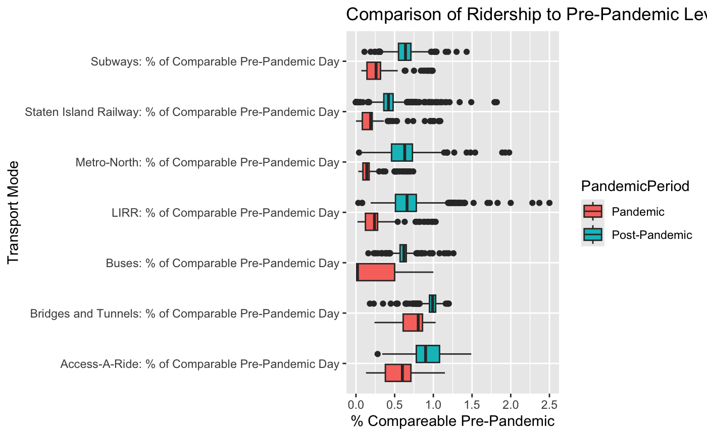
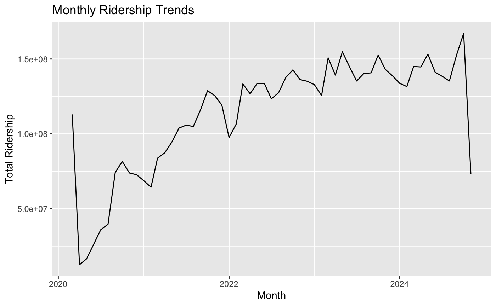
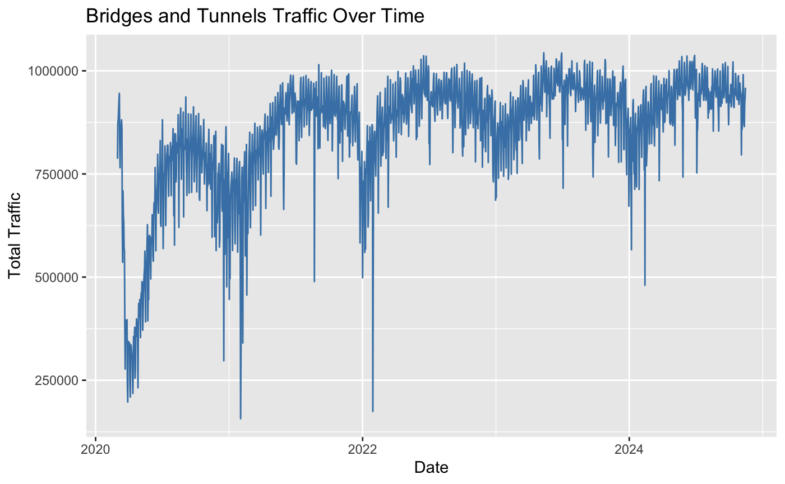
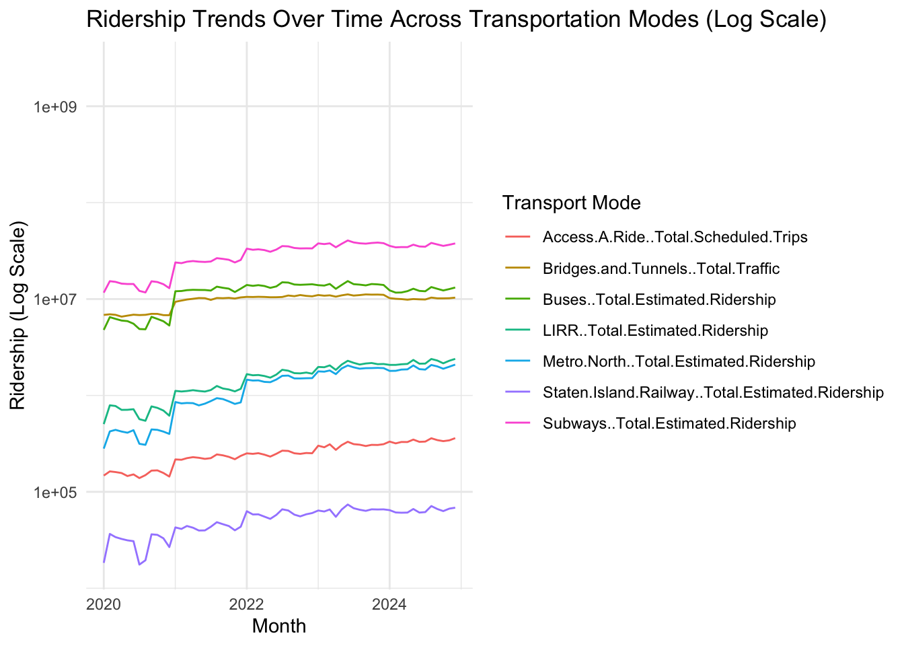
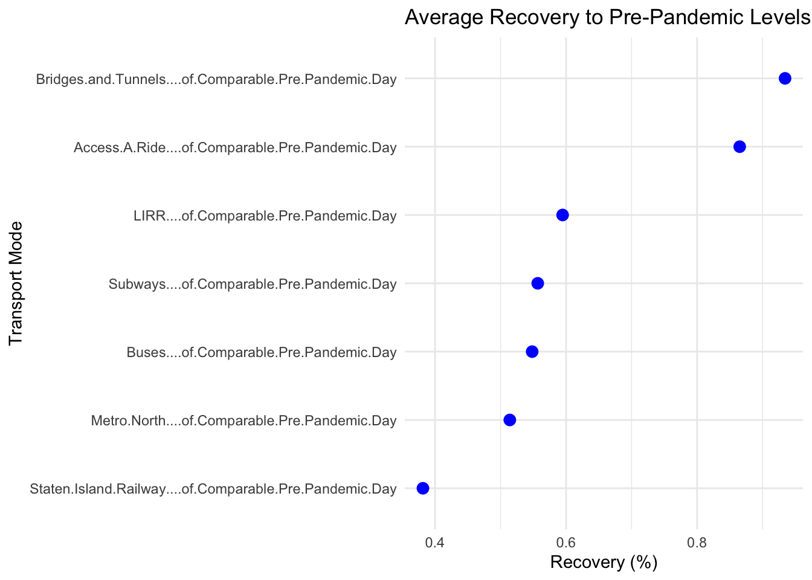
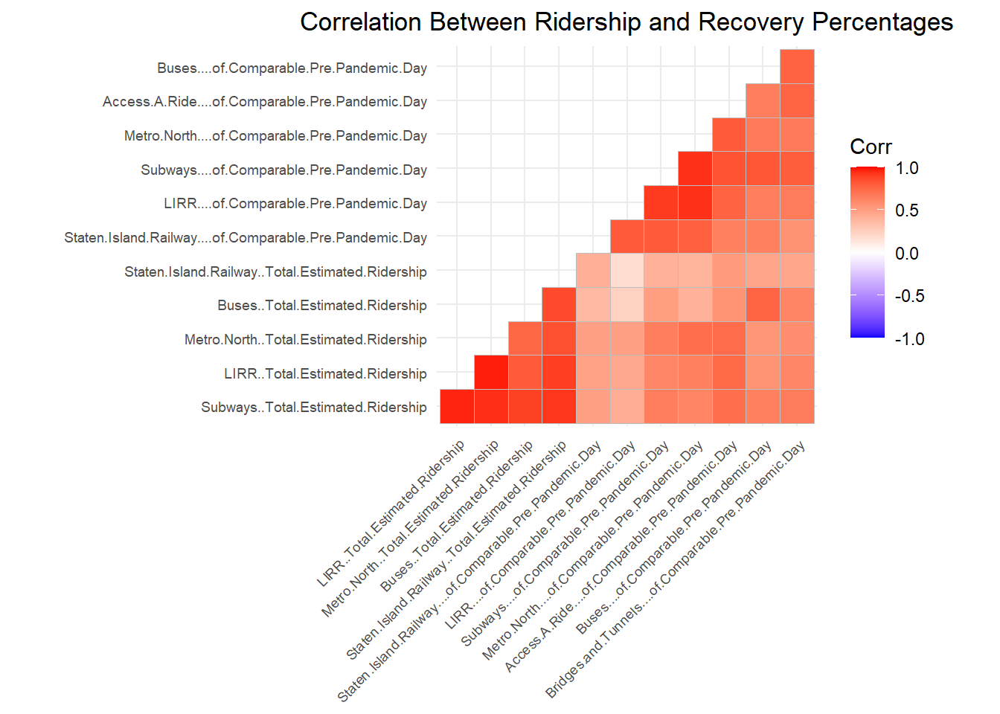
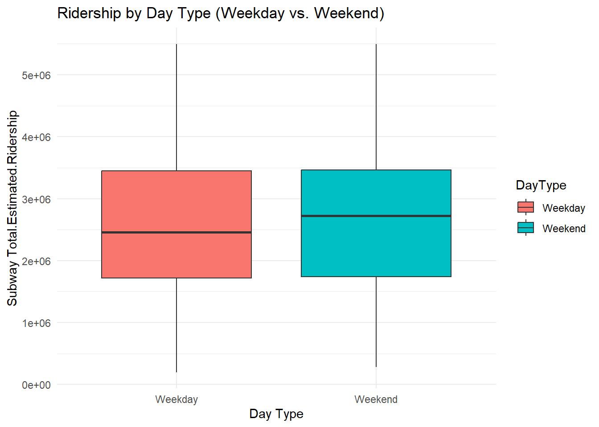
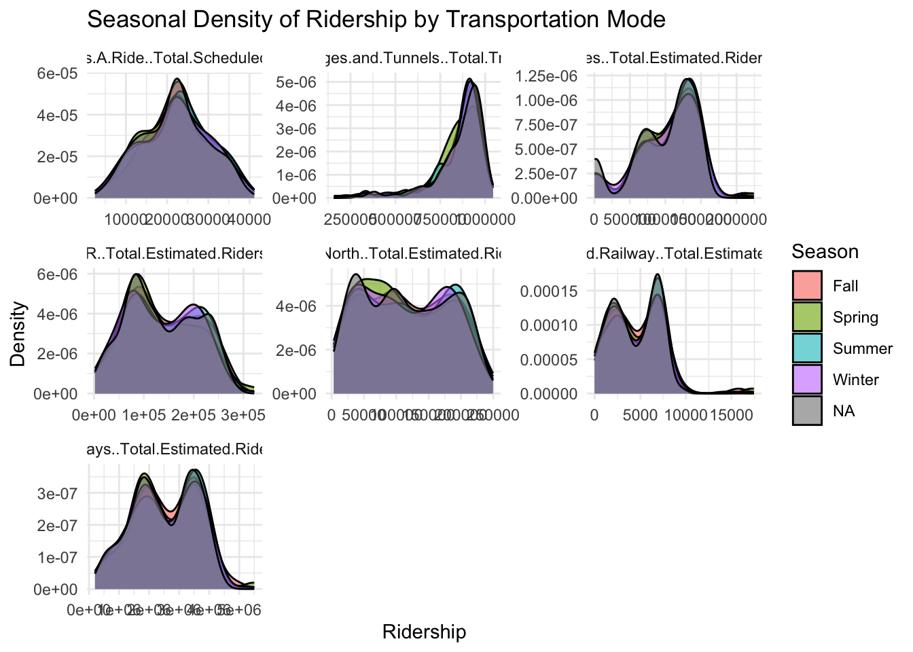
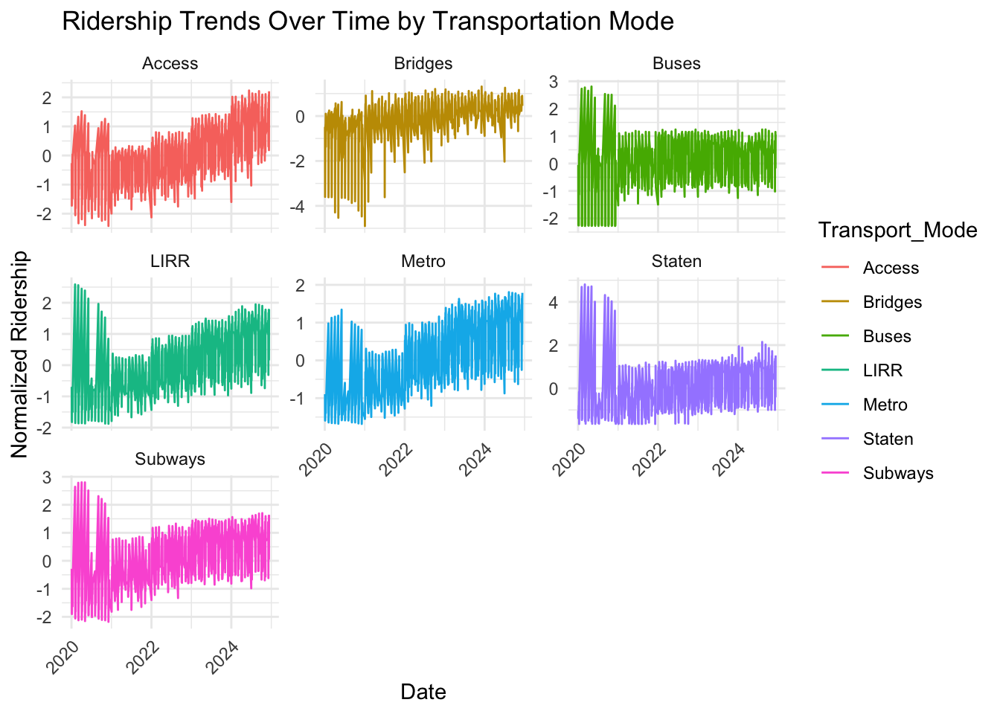
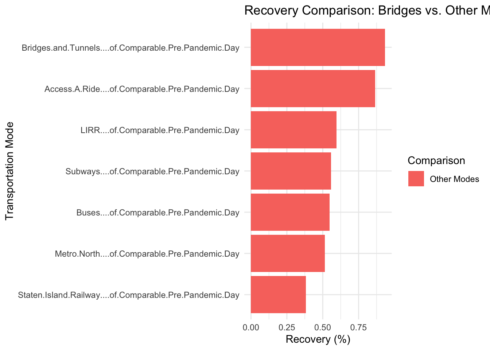

Code
dataset <- read.csv("MTA_Daily_Ridership_Data__Beginning_2020.csv")
This graph shows a five point summary for each of the 7 ways of transportation in the dataset grouped by during the pandemic and post pandemic. This highlights the outliers, range, and central points of each form of transportation. To interpret this graphic, values below 1 mean that the useage of the specified form of transportation during the time period was below that of the pre-pandemic days. In contrast, values above 1 mean that the useage of the form of transportation was higher than that of the pre-pandemic days. From this graphic, we observe that during the pandemic, % of compareable pre-pandemic was almost exclusively below 1 meaning that the useage of almost all transportations went down for almost every single day. Few exceptions lie in the Access A Ride, Bridge and Tunnels, and Staten Island Railway. The central point of all forms of transportation for post-pandmic is higher than that of the same form of transportation during the pandemic which is to be expected. However, we can see that the central point tends to be below 1 meaning MTA hasn’t seemed to have fully recovered or hasn’t grown since pre-pandemic days.

This graphic shows overall monthly ridership across subways, buses, LIRR, and Metro-North. We can see trends of ridership with respect to time. Early 2020, we can observe a sharp dip when the COVID-19 pandmic lockdowns started. We can see an upward trend in ridership as COVID-19 restrictions lift.

From the previous graphics, we noticed that Bridges and Tunnels seemed to differ from the other modes of transportation. The percentage recovery was typically higher than other modes. Logically, this makes sense as Bridges and Tunnel traffic can be impacted by both public transportation (buses) and “private transportation” such as cars and motorcycles. This graphic investigates the overall traffic over time for bridges and tunnels. This shows sharp declines in COVID-19 restrictions were placed but recovered very quickly.
Understanding the temporal effects of the pandemic on transportation usage is critical for planning recovery strategies and future crises. Comparing the trends across all transportation modes will reveal resilience or vulnerabilities in the system. It is expected that different transportation modes might show varying recovery rates based on accessibility or dependence.Identifying patterns will help assess infrastructure priorities and evaluate public behavior changes.
dataset <- read.csv("MTA_Daily_Ridership_Data__Beginning_2020.csv")dataset$Date <- as.Date(dataset$Date, "%d/%m/%Y")library(lubridate)
Attaching package: 'lubridate'The following objects are masked from 'package:base':
date, intersect, setdiff, unionlibrary(ggplot2)
library(dplyr)
Attaching package: 'dplyr'The following objects are masked from 'package:stats':
filter, lagThe following objects are masked from 'package:base':
intersect, setdiff, setequal, unionlibrary(tidyr)monthly_data <- dataset |>
mutate(Month = floor_date(Date, "month")) |>
group_by(Month) |>
summarize(across(c("Subways..Total.Estimated.Ridership",
"Buses..Total.Estimated.Ridership",
"LIRR..Total.Estimated.Ridership",
"Metro.North..Total.Estimated.Ridership",
"Access.A.Ride..Total.Scheduled.Trips",
"Bridges.and.Tunnels..Total.Traffic",
"Staten.Island.Railway..Total.Estimated.Ridership"), sum, na.rm = TRUE)) |>
pivot_longer(cols = -Month, names_to = "Transport_Mode", values_to = "Ridership")Warning: There was 1 warning in `summarize()`.
ℹ In argument: `across(...)`.
ℹ In group 1: `Month = 2020-01-01`.
Caused by warning:
! The `...` argument of `across()` is deprecated as of dplyr 1.1.0.
Supply arguments directly to `.fns` through an anonymous function instead.
# Previously
across(a:b, mean, na.rm = TRUE)
# Now
across(a:b, \(x) mean(x, na.rm = TRUE))ggplot(monthly_data, aes(x = Month, y = Ridership, color = Transport_Mode)) +
geom_line() +
scale_y_log10() +
labs(title = "Ridership Trends Over Time Across Transportation Modes (Log Scale)",
x = "Month", y = "Ridership (Log Scale)", color = "Transport Mode") +
theme_minimal()Warning: Removed 7 rows containing missing values or values outside the scale range
(`geom_line()`).
Findings: From the graph we can deduce that the subway has constantly been the preferred mode of transportation relative to all the other modes.It is also interesting to find that bridge and tunnel traffic has stayed very constant throughout the time frame.In regards to all the modes; it seems they have all stayed constant in terms of ridership preference as no mode has overtaken the other.Thus, identifying these patterns can help assess infrastructure priorities and evaluate public behavior changes.
Identifying the recovery rates across different modes is key to allocating resources effectively. Comparing the “percentage of Comparable Pre-Pandemic Day” columns for each mode of transportation can highlight which transportation services have regained their ridership and which still fall behind.
recovery_data <- dataset |>
summarize(across(ends_with("Comparable.Pre.Pandemic.Day"), mean, na.rm = TRUE)) |>
pivot_longer(cols = everything(), names_to = "Transport_Mode", values_to = "Recovery")
# Cleveland dot plot
ggplot(recovery_data, aes(x = Recovery, y = reorder(Transport_Mode, Recovery))) +
geom_point(color = "blue", size = 3) +
labs(title = "Average Recovery to Pre-Pandemic Levels by Mode",
x = "Recovery (%)", y = "Transport Mode") +
theme_minimal()
Findings: From the graphic, we can see that Bridges and tunnels as well as Access A Ride have seen the highest levels of recovery. We can hypothesize that this swift recovery is because commuters and people with disabilities really do not have many options when it comes to transportation.This information can influence policies can focus on struggling modes, promoting ridership through targeted interventions.
We want to uncover if higher total ridership corresponds to higher recovery percentages, revealing structural dependencies. Modes with higher recovery may indicate critical systems, while weak correlations could suggest alternative modes or varying dependencies.
correlation_matrix <- dataset %>%
select(ends_with("Total.Estimated.Ridership"), ends_with("Comparable.Pre.Pandemic.Day")) %>%
cor()
# Heatmap
library(ggcorrplot)Warning: package 'ggcorrplot' was built under R version 4.4.2ggcorrplot(correlation_matrix,
hc.order = TRUE,
type = "lower",
title = "Correlation Between Ridership and Recovery Percentages",
lab = FALSE, # Remove the numbers in the squares
ggtheme = theme_minimal()) +
theme(
plot.title = element_text(hjust = 0.5), # Center the title
axis.text.x = element_text(size = 7), # Adjust size of x-axis labels
axis.text.y = element_text(size = 7) # Adjust size of y-axis labels
)
Findings:Across the board there is positive correlation between each factor. This shows us that the ridership generally moves in relation with each other in whichever direction. This creates great insights will help optimize services for sustained demand.
These trends can indicate commuting patterns and leisure travel dynamics. Post-pandemic, commuting and recreational patterns might have shifted, affecting peak usage times.
dataset$DayType <- ifelse(weekdays(as.Date(dataset$Date, "%d/%m/%Y")) %in% c("Saturday", "Sunday"), "Weekend", "Weekday")
ggplot(dataset, aes(x = DayType, y = `Subways..Total.Estimated.Ridership`, fill = DayType)) +
geom_boxplot() +
labs(title = "Ridership by Day Type (Weekday vs. Weekend)",
x = "Day Type", y = "Subway Total.Estimated.Ridership") +
theme_minimal()
Findings: Here we see that the inter-quartile range of the weekday and weekend ridership is identical however there is a higher usage average on the weekends. This could be attributed to more people working from home during and after the pandemic as well as the increased tourism and yearn to socialize after the pandemic. Information like this can influence schedule optimization and fare policy adjustments.
Seasonal variations may affect transportation modes differently, depending on weather, holidays, and tourism. Comparing seasonal ridership trends can help predict demand.
dataset$Season <- case_when(
month(dataset$Date) %in% c(12, 1, 2) ~ "Winter",
month(dataset$Date) %in% c(3, 4, 5) ~ "Spring",
month(dataset$Date) %in% c(6, 7, 8) ~ "Summer",
month(dataset$Date) %in% c(9, 10, 11) ~ "Fall"
)
# Recreate long_data including the Season column
long_data <- dataset %>%
pivot_longer(cols = c("Subways..Total.Estimated.Ridership",
"Buses..Total.Estimated.Ridership",
"LIRR..Total.Estimated.Ridership",
"Metro.North..Total.Estimated.Ridership",
"Access.A.Ride..Total.Scheduled.Trips",
"Bridges.and.Tunnels..Total.Traffic",
"Staten.Island.Railway..Total.Estimated.Ridership"),
names_to = "Transport_Mode",
values_to = "Ridership") %>%
mutate(Season = case_when(
month(Date) %in% c(12, 1, 2) ~ "Winter",
month(Date) %in% c(3, 4, 5) ~ "Spring",
month(Date) %in% c(6, 7, 8) ~ "Summer",
month(Date) %in% c(9, 10, 11) ~ "Fall"
))
# Plot with density
ggplot(long_data, aes(x = Ridership, fill = Season)) +
geom_density(alpha = 0.6) +
facet_wrap(~ Transport_Mode, scales = "free") +
labs(title = "Seasonal Density of Ridership by Transportation Mode",
x = "Ridership", y = "Density") +
theme_minimal()+
theme(axis.text.x = element_text(angle = 45, size = 6))
Findings: This visual is quite interesting as it continues to highlight the high correlation of the modes of transportation in terms of ridership. In all seasons, the spring and summer tends to have slightly more activity throughout the years. For the MTA, Seasonal data can inform promotional campaigns and maintenance schedules.
Access-A-Ride caters to specific populations, and its usage patterns may reveal social and mobility challenges during crises.This specialized service might show distinct trends compared to other modes.
library(fmsb)Warning: package 'fmsb' was built under R version 4.4.2library(stringr)
normalized_data <- dataset %>%
mutate(across(where(is.numeric), ~ scale(.) %>% as.numeric()))
# Select only ridership columns and reshape data for heatmap
heatmap_data <- normalized_data %>%
select("Date","Subways..Total.Estimated.Ridership",
"Buses..Total.Estimated.Ridership",
"LIRR..Total.Estimated.Ridership",
"Metro.North..Total.Estimated.Ridership",
"Access.A.Ride..Total.Scheduled.Trips",
"Bridges.and.Tunnels..Total.Traffic",
"Staten.Island.Railway..Total.Estimated.Ridership") %>%
pivot_longer(cols = -Date, names_to = "Transport_Mode", values_to = "Normalized_Ridership")
# Shorten column names for Transport_Mode
heatmap_data$Transport_Mode <- str_replace(heatmap_data$Transport_Mode, "\\..*", "")
ggplot(heatmap_data, aes(x = Date, y = Normalized_Ridership, color = Transport_Mode)) +
geom_line() +
facet_wrap(~ Transport_Mode, scales = "free_y") +
labs(title = "Ridership Trends Over Time by Transportation Mode",
x = "Date", y = "Normalized Ridership") +
theme_minimal() +
theme(axis.text.x = element_text(angle = 45, hjust = 1))Warning: Removed 7252 rows containing missing values or values outside the scale range
(`geom_line()`).
Findings: For all modes we do see a significant drop after the pandemic but the metro, LIRR and Access A Ride have regained their ridership either close to pre-pandemic levels or above it. This could be caused by housing/ neighborhood migration, increased activity and the need for diverse transportation solutions. Findings will support accessibility policies and resource allocation.
Bridges and tunnels might serve as a proxy for private transportation recovery compared to public systems. Different recovery trends can reveal preferences for public vs. private transport post-pandemic.
recovery_data <- dataset %>%
summarize(across(ends_with("Comparable.Pre.Pandemic.Day"), mean, na.rm = TRUE)) %>%
pivot_longer(cols = everything(), names_to = "Transport_Mode", values_to = "Recovery") %>%
mutate(Comparison = ifelse(grepl("Bridges and Tunnels", Transport_Mode), "Bridges", "Other Modes"))
ggplot(recovery_data, aes(x = reorder(Transport_Mode, Recovery), y = Recovery, fill = Comparison)) +
geom_bar(stat = "identity") +
coord_flip() +
labs(title = "Recovery Comparison: Bridges vs. Other Modes",
x = "Transportation Mode", y = "Recovery (%)") +
theme_minimal()
Findings: Post-pandemic ridership has indeed changed as people adapted to the new way of living. From this visual it seems more people left the inner city to other neighborhoods that driving is a lot more feasible in while still having attachments (jobs, friends/family) in the city. As bridges and tunnels have recovered a lot better since the pandemic there can be discussions that can help align policies for congestion and emissions reduction.